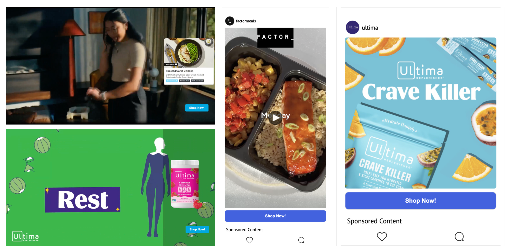
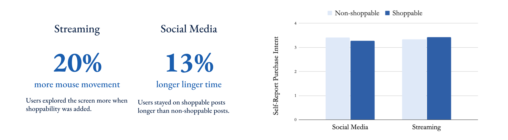
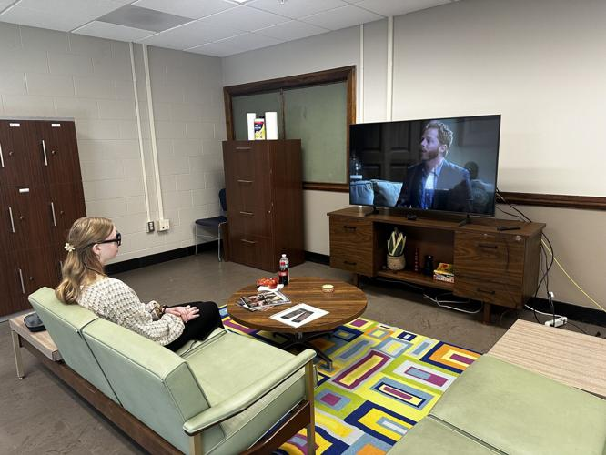
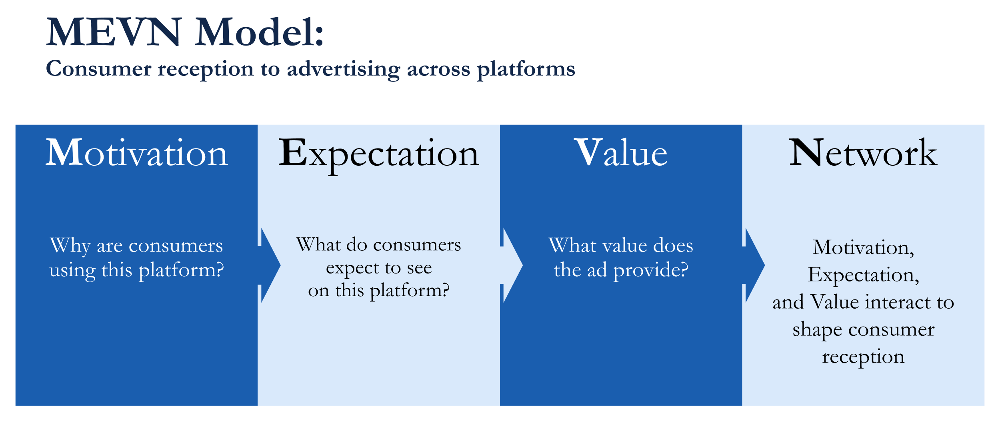

Case study
Shoppable Advertising Across Platforms
When does adding commerce functionality create value — and when does it create friction?
At a Glance
- Led an end-to-end research program asking when shoppable features help users versus interrupt them
- Sequenced qualitative discovery, causal experiments, and high-fidelity behavioral validation
- Built custom experimental interfaces and integrated self-report, telemetry, and attention data
- Translated findings into a decision framework for product, interaction, and monetization choices
The Product Question
Shoppable ads promise a shorter path from discovery to purchase, but they also add UI, technical complexity, and new ways to interrupt users. The core product question was not simply whether shoppability “works,” but where the feature creates enough value to justify the interaction cost.
I designed the program to progressively reduce that uncertainty: first understand why users reacted differently, then test those explanations causally, and finally see whether the patterns held in a more realistic viewing environment.
Research Strategy
The program moved from discovery to validation to synthesis.
Discover
Interviews surfaced user expectations, motivations, and sources of friction.
Test
Controlled experiments tested attention, engagement, and purchase outcomes across platforms.
Validate
A simulated living room tested whether the pattern held in a realistic viewing context.
Synthesize
Cross-study findings became the MEVN framework for product decision-making.
Finding 1: Context Determines Whether Shoppability Feels Useful or Intrusive
Interviews showed that users did not judge shoppability on convenience alone. The same feature felt useful when it supported an existing discovery or purchase goal, but intrusive when it competed with socializing, entertainment, or relaxation.
What this changed: Instead of treating shoppability as a universally beneficial feature, the next studies tested whether its effects changed across platform contexts.
Finding 2: More Attention Did Not Necessarily Mean More Conversion
I worked with a faculty advisor and technical partner to build custom experimental interfaces that randomized shoppable versus non-shoppable formats and logged interaction behavior. This allowed us to test whether the feature itself caused differences in user response.


Shoppability increased attention and engagement in both contexts, but those gains did not reliably translate into stronger purchase intent. On social media, shoppability could reduce purchase intent; on streaming platforms, it produced more positive effects.
Product implication: clicks and attention are not enough to judge whether an interactive commerce feature is creating value. Teams also need downstream behavioral and attitudinal outcomes.
Finding 3: Interaction Cost Was Psychological, Not Just Mechanical
Online experiments gave us causal control, but clicking an ad on a laptop is different from interacting with a television while watching a show. I therefore designed an in-person living-room simulation using a mock TV interface and physical remote, trading some scale for ecological validity.

Participants often noticed the shoppable prompt and showed product interest, yet actual interaction remained rare. Follow-up interviews revealed a hidden cost: users were unsure what clicking would do, whether it would interrupt the program, or whether it implied a commitment to buy.
Product implication: reduce perceived commitment by making outcomes explicit, reversible, and easy to defer to another device or moment.
From Findings to a Decision Framework

I synthesized the cross-study findings into the MEVN model. The central takeaway was that shoppability is not inherently good or bad: its value depends on whether the interaction aligns with user motivation, platform expectations, perceived value, and the surrounding platform context.
The framework turns the research into a practical pre-launch question: does this feature reduce friction for the user's current goal, or introduce a new interaction cost?
What I Would Tell the Product Team
- Do not optimize for clicks alone. Attention can increase without improving downstream outcomes.
- Add commerce where it matches user intent. The same interaction can feel useful in one context and intrusive in another.
- Lower the commitment cost. Preview outcomes, make actions reversible, and support deferred interaction.
Outcome
This work was published in the Journal of Advertising Research. More importantly for product practice, it turned a broad question — “do shoppable ads work?” — into a more useful decision framework for evaluating when interactive commerce is worth adding.